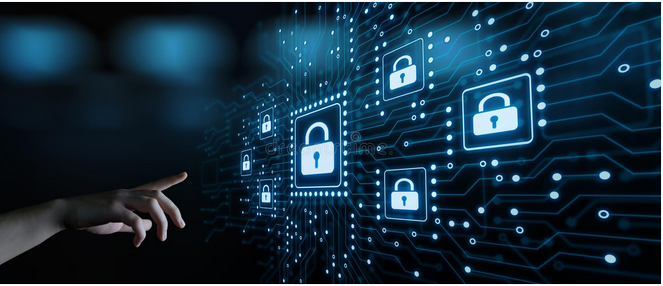
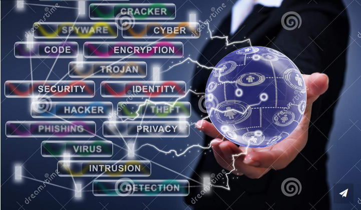

About Me

My name is Fadel. I am a IT professional with 10 years of experience in Software Quality Assurance but I also have a lot of interest in other related fields such as Project Management and Information Security.
We will be discussing the latter on this blog as part of my final project for my Bachelor degree in CIT.
Links
Links to resources
The CIA Triad
A triple threat, Jan 7, 2023

The three letters in "CIA triad" stand for Confidentiality, Integrity, and Availability. The CIA triad is a common model that forms the basis for the development of security systems. They are used for finding vulnerabilities and methods for creating solutions. The confidentiality, integrity, and availability of information is crucial to the operation of a business, and the CIA triad segments these three ideas into separate focal points. This differentiation is helpful because it helps guide security teams as they pinpoint the different ways in which they can address each concern. Ideally, when all three standards have been met, the security profile of the organization is stronger and better equipped to handle threat incidents.
Confidentiality involves the efforts of an organization to make sure data is kept secret or private. To accomplish this, access to information must be controlled to prevent the unauthorized sharing of data—whether intentional or accidental. A key component of maintaining confidentiality is making sure that people without proper authorization are prevented from accessing assets important to your business. Conversely, an effective system also ensures that those who need to have access have the necessary privileges.
Integrity involves making sure your data is trustworthy and free from tampering. The integrity of your data is maintained only if the data is authentic, accurate, and reliable. Compromising integrity is often done intentionally. An attacker may bypass an intrusion detection system (IDS), change file configurations to allow unauthorized access, or alter the logs kept by the system to hide the attack. Integrity may also be violated by accident. Someone may accidentally enter the wrong code or make another kind of careless mistake. Also, if the company’s security policies, protections, and procedures are inadequate, integrity can be violated without any one person in the organization accountable for the blame.
Even if data is kept confidential and its integrity maintained, it is often useless unless it is available to those in the organization and the customers they serve. This means that systems, networks, and applications must be functioning as they should and when they should. Also, individuals with access to specific information must be able to consume it when they need to, and getting to the data should not take an inordinate amount of time.
Role of The Human Factor In Cybersecurity
The Human Element, Jan 10, 2023

Humans are human...
With rapid technological advancements, organizations around the globe continue to experience massive incidents of cyberattacks. Typically, these cyberattacks are associated to both insider as well as outsider attacks. In this regard, outsider attacks refers to attacks originating from the internet while insider attacks refers to attacks originating from within an organization.
To mitigate cyberthreats, therefore, organizations must be prepared to address both insider as well as outsider threats. While technical security controls can help to in addressing outsider threats, they might fail to properly detect and identify insider attacks. This is because insider attacks are initiated by individuals entrusted and given acccess privileges to access critical business assets within an organization.
They can include:
- Employees
- Security personnel
- Managers
- Contractors
- Suppliers
What Is Information Security
Information Security Policies, Jan 23, 2023

The Basics of Information Security
An information security policy (ISP) is a set of rules, policies and procedures designed to ensure all end users and networks within an organization meet minimum IT security and data protection security requirements. ISPs should address all data, programs, systems, facilities, infrastructure, authorized users, third parties and fourth parties of an organization.
An information security policy aims to enact protections and limit the distribution of data to only those with authorized access. Organizations create ISPs to:
- Establish a general approach to information security
- Document security measures and user access control policies
- Detect and minimize the impact of compromised information assets such as misuse of data, networks, mobile devices, computers and applications
- Protect the reputation of the organization
- Comply with legal and regulatory requirements like NIST, GDPR, HIPAA and FERPA
- Protect their customer's data, such as credit card numbers
- Provide effective mechanisms to respond to complaints and queries related to real or perceived cyber security risks such as phishing, malware and ransomware
- Limit access to key information technology assets to those who have an acceptable use
Social Engineering Attacks
What Is A Phishing Attack<, Jan 30, 2023
Phishing is a type of social engineering attack often used to steal user data, including login credentials and credit card numbers. It occurs when an attacker, masquerading as a trusted entity, dupes a victim into opening an email, instant message, or text message. The recipient is then tricked into clicking a malicious link, which can lead to the installation of malware, the freezing of the system as part of a ransomware attack or the revealing of sensitive information.
An attack can have devastating results. For individuals, this includes unauthorized purchases, the stealing of funds, or identify theft. Moreover, phishing is often used to gain a foothold in corporate or governmental networks as a part of a larger attack, such as an advanced persistent threat (APT) event. In this latter scenario, employees are compromised in order to bypass security perimeters, distribute malware inside a closed environment, or gain privileged access to secured data.
Security Measures
Security Measures to Mitigate CyberAttacks, Jan 15, 2023

Let's discuss the top security measures to help mitigate a security attack...
- Keep software up-to-date
- Keep hardware up-to-date
- Avoid opening suspicious emails
- Encrypt Data
- Install antivirus and anti-malware solutions
- Use VPN to connect to corporate from insecure internet
- Enable 2-Factor Authentication
- Use strong and complex passwords
- Implement and enforce access control measures
- Back up important data
- Encrypt data in storage or transit
- Train employees
- Enforce physical security measures